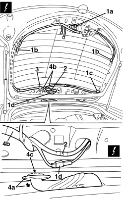

7205E56 STRIPPING TAILGATE
- Path
- Procedures > 72 PANELS AND FRAMES > 7205 STRIPPING FOR REPLACEMENT INTERVENTIONS > 7205E EXTERIOR PARTS > 7205E56 STRIPPING TAILGATE
- Kind
- repair procedure (removal / refitting; the operation number is the code)
- Applies to
- all engines; all production periods
- Interactive page
- https://sloeber94.github.io/elrnDB-aBrrSpdr/en/#/946002712
Applies to: all engines; all production periods
Op. 7015A05 TAILGATE LOWER INTERIOR PANEL-R R
Op. 7015A06 TAILGATE UPPER INTERIOR PANEL - R.R.
Op. 7015B10 SINGLE TAILGATE LOCK - R+R OR REPAIR WITH PANEL/PROTECTION REMOVED
1. Disconnect the electrical connections (1a, 1b, 1c, 1d).
Description | Component |
|---|---|
REAR WIPER MOTOR | |
HEATED REAR WINDSCREEN | |
ADDITIONAL REAR LIGHT (THIRD BRAKE LIGHT) |
2. Disconnect the rearscreen washer fluid pipe.
3. Disconnect the wiring retainers.
4. Disconnect the duct seal (4a) and extract the wiring (4b) from the tailgate, passing it through the opening (4c).

Applies to: all engines; all production periods
Op. 5050C34 REAR WIPER ARM WITH BLADE - R+R
Op. 7055A83 BADGE ON TAILGATE - R.R
Op. 5050C42 REAR WIPER MOTOR - R+R
Op. 7015B12 TAILGATE SELF-ADJUSTING BUFFERS - R.R.
Op. 7210G76 REAR SPOILER - R.R.
Op. 7035B14 REAR WINDOW GLASS - R.R INCLUDES CLEANING HOUSING
Topics linked from this page (12)
- 5050C34 REAR WIPER ARM WITH BLADE - R+R
- 5050C42 REAR WIPER MOTOR - R+R
- 7015A05 TAILGATE LOWER INTERIOR PANEL-R R
- 7015A06 TAILGATE UPPER INTERIOR PANEL - R.R.
- 7015B10 SINGLE TAILGATE LOCK - R+R OR REPAIR WITH PANEL/PROTECTION REMOVED
- 7015B12 TAILGATE SELF-ADJUSTING BUFFERS - R.R.
- 7035B14 REAR WINDOW GLASS - R.R INCLUDES CLEANING HOUSING
- 7055A83 BADGE ON TAILGATE - R.R
- 7210G76 REAR SPOILER - R.R.
- F040 ADDITIONAL REAR LIGHT (THIRD BRAKE LIGHT)
- N016 REAR WINDOW WIPER MOTOR
- P055 HEATED REARSCREEN